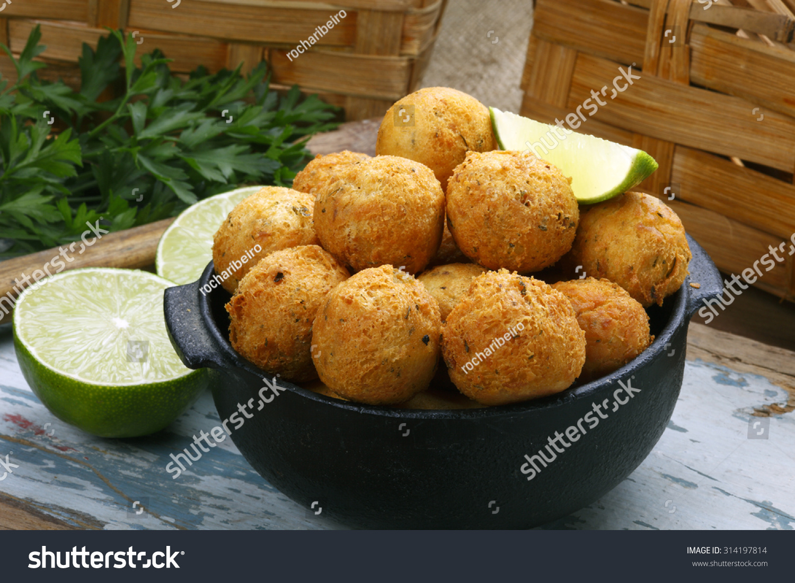

Codfish Fritter

Description
Codfish fritters are a very popular dish in countries like Brazil and Angola, imported from Portuguese cuisine.
How about learning this delicious recipe?
Ingredients
- 1 Kg of potatoes;
- 500g of cod;
- 2 tablespoons of wheat;
- Garlic;
- Onion;
- Parsley;
- Salt;
- Oil for frying.
Steps
- Desalt the cod: wash the cod and soak it in water and keep in the refrigerator for 24 hours or more. Change the water every 6 hours.
- Cook the cod for about 20 min or till it's cooked through.
- Shred the cod and remove its bones.
- Cook with salt and mash the potatoes.
- In a pan with oil, sauté the chopped garlic and onion.
- Mix the potatoes and cod, in the pan and add the wheat and parsley.
- After it's cool, shape it in small balls.
- Fry it over low heat.
- Enjoy!!!